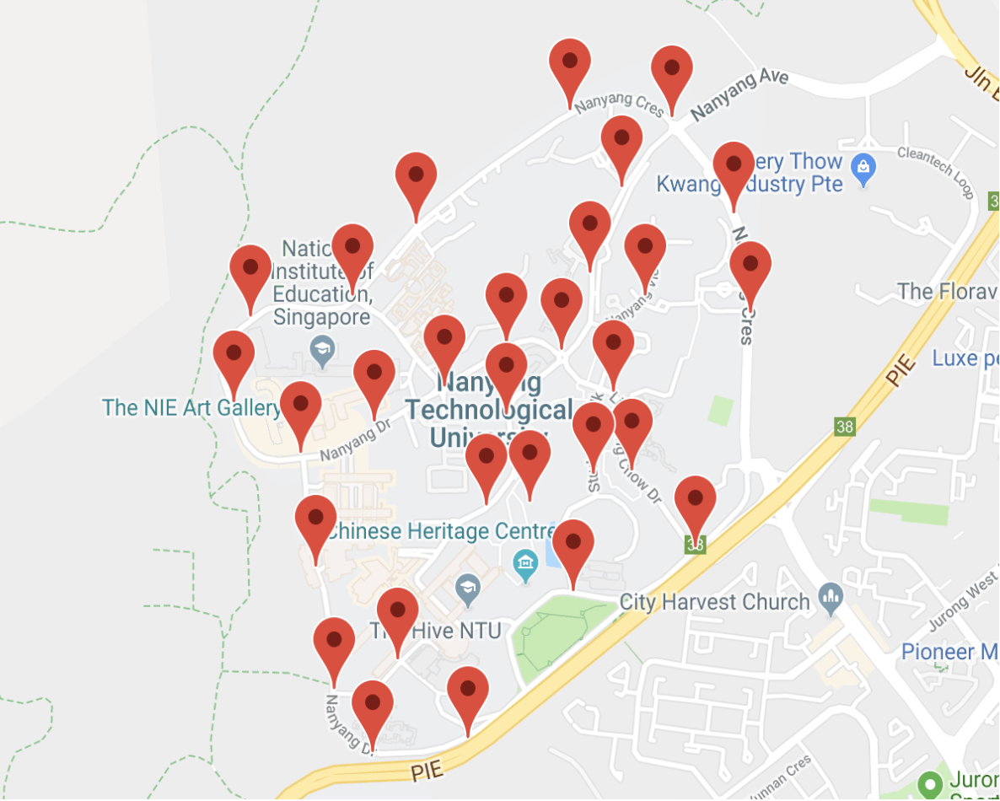
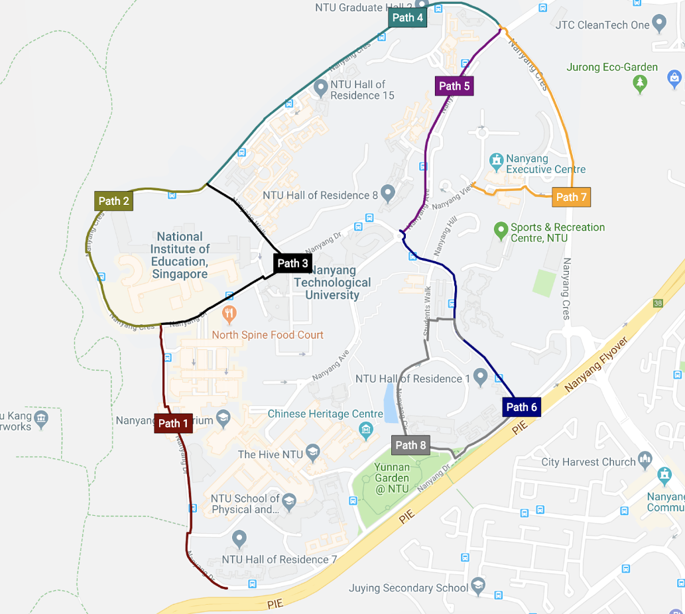
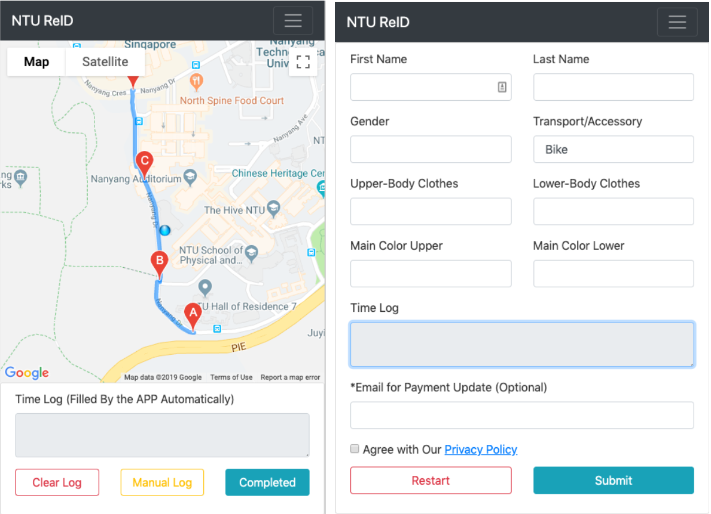
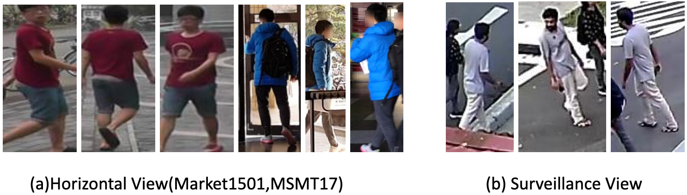
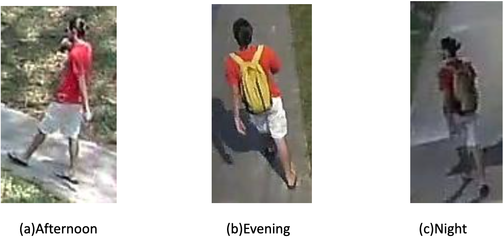
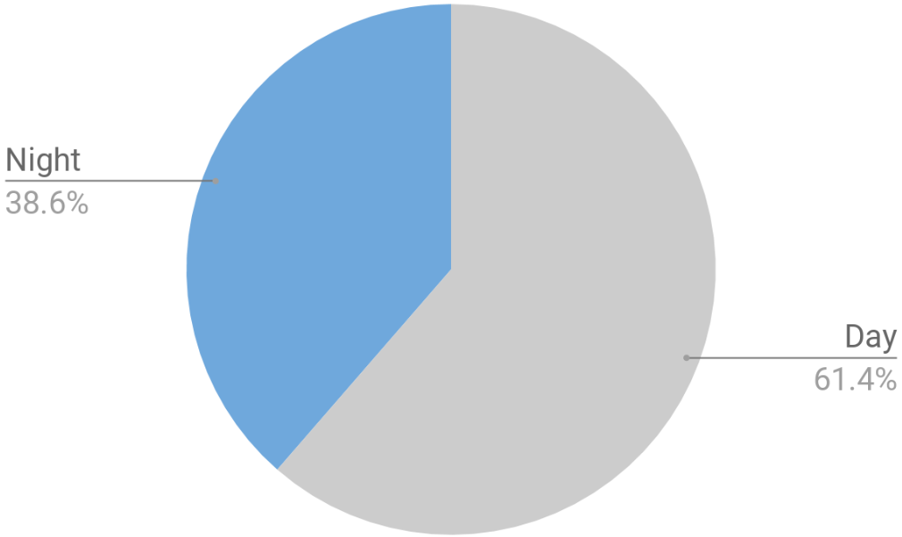
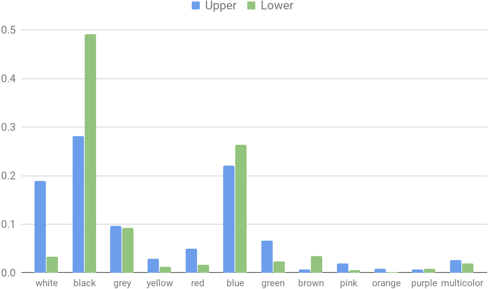
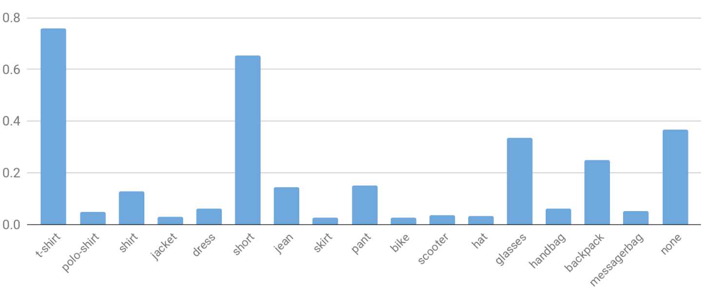
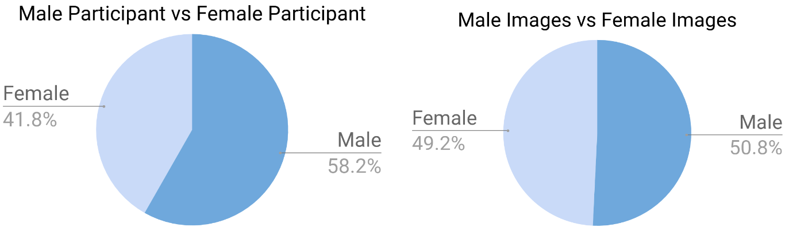

The existing public Person Re-ID datasets have a very limited number of cameras ranging from 6 to 15, reducing variation and diversity. As a result, recently proposed algorithms can achieve over 90% rank-1 accuracy on Market1501 and DukeMTMC-reID. However, real-world surveillance systems usually consist of over hundreds of cameras. Creating a more realistic dataset is the foundation for developing a more generalized and robust Person ReID model.
↓ Download NTU-Outdoor-38Dataset Collection
The NTU-Outdoor dataset was collected within the NTU campus using actual surveillance cameras installed on lamp posts. There are a total of 34 camera groups, each containing two to four cameras pointing in different directions.

Based on all 34 camera groups, 8 paths were designed for participants to walk past the cameras. The 8 paths contain 51 cameras from 23 camera groups. A total of 332 NTU students, staff and residents participated in this dataset collection.

To increase annotation efficiency, a mobile web app was developed for this collection. By running the app on a smartphone, the GPS information and timestamps of the participant passing each camera were automatically recorded. This significantly reduced the searching time window for annotators.

After phase 1 annotation, 26,175 three-minute video clips were extracted. From those clips, a total of 45,397 bounding box images were annotated with 40 additional attribute labels, collected from 278 different people (unique identities) with 805 different appearances over an 8-week period.
Why This Dataset Matters
1. More Cameras
All existing large-scale datasets use only 6–15 cameras. The NTU-Outdoor dataset uses 51 real-world surveillance cameras covering the entire 2 km² NTU campus.
| Dataset | Market-1501 | DukeMTMC-reID | MSMT17 | NTU Outdoor |
|---|---|---|---|---|
| Cameras | 6 | 8 | 15 | 51 |
2. Actual Surveillance Viewing Angles
Market1501 and MSMT17 use cameras mounted on tripods, giving a near-horizontal view. Real surveillance cameras are mounted on lamp posts or ceilings with wide-angle, top-down views. NTU-Outdoor uses only actual lamp post surveillance cameras.

3. Day & Night Coverage
Real-world surveillance runs 24/7. All existing public datasets only use daytime video. NTU-Outdoor records all cameras for 24 hours non-stop, with 38.6% of images captured during nighttime.


4. Attribute Labels
Appearance attributes are extremely valuable auxiliary information for training generalized Person Re-ID models. In NTU-Outdoor Dataset, most attributes are submitted by participants themselves, eliminating manual annotation and providing more accurate labels.

Attributes include: 5 upper body clothing types (t-shirt, polo-shirt, shirt, jacket, dresses), 5 lower body clothing types (shorts, jeans, pants, shirt, dresses), plus accessories (hat, glasses, handbag, backpack, messenger bag), and transportation (bike, e-scooter).


| Dataset | Market-1501 | DukeMTMC-reID | MSMT17 | NTU Outdoor |
|---|---|---|---|---|
| Attribute Labels | 30 | 23 | — | 40 |
Overall Comparison
| Dataset | Market-1501 | DukeMTMC-reID | MSMT17 | NTU-Outdoor | NTU-Outdoor-38 (Released) |
|---|---|---|---|---|---|
| Surveillance Camera | No | Yes | No | Yes | Yes |
| Number of Cameras | 6 | 8 | 15 | 51 | 38 |
| Collection Period | 1 Day | 1 Day | 4 Days | 8 Weeks | 8 Weeks |
| Time Coverage | — | — | Morning / Noon / Afternoon | 24 Hours (Day & Night) | 24 Hours (Day & Night) |
| Number of Identities | 1501 | 1812 | 4101 | 805 | 549 |
| Number of BBoxes | 32,668 | 36,411 | 126,441 | 66,084 | 48,347 |
| Attribute Labels | 30 | 23 | — | 40 | 40 |
| Person Detection | DPM | DPM | Faster RCNN | YOLO V3 | YOLO V3 |